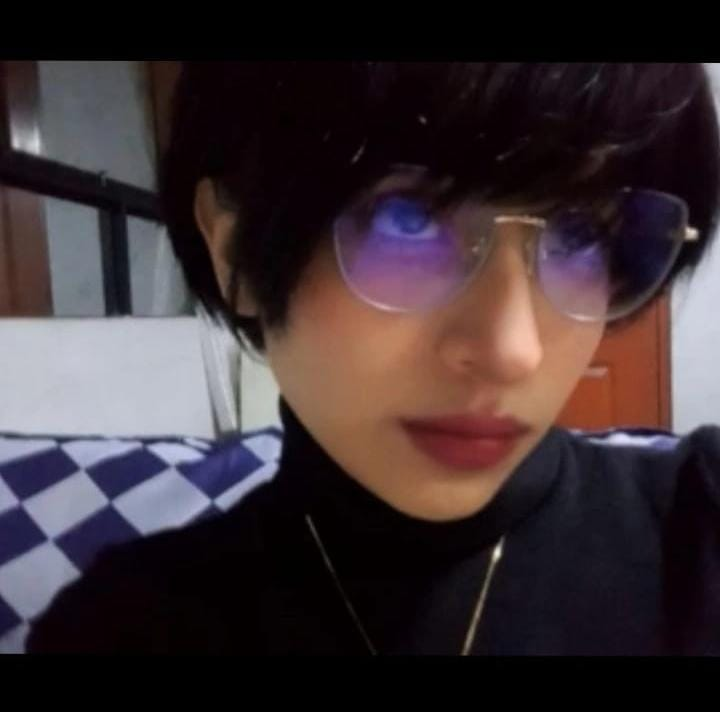
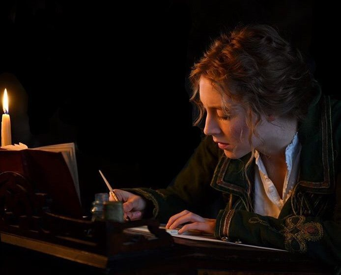
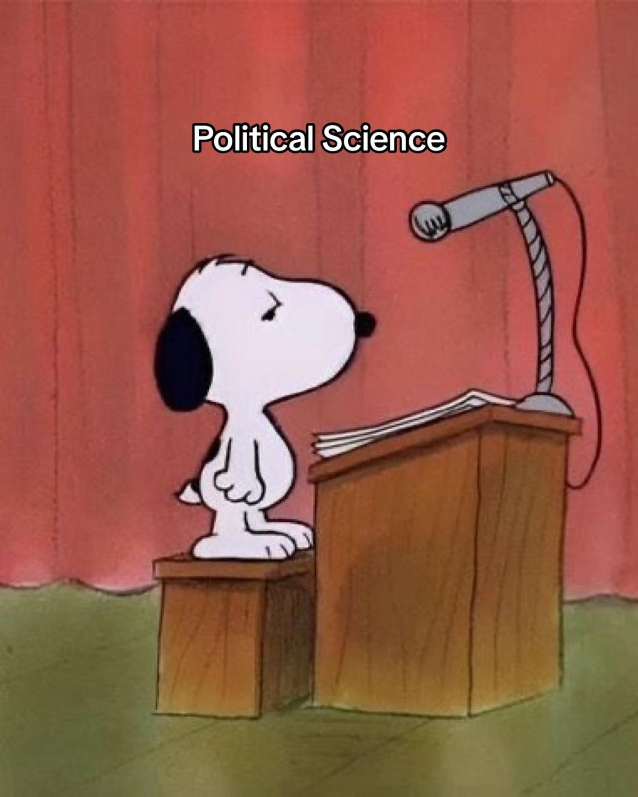

Mi nombre es Laidy MC Rivera, soy estudiante de la carrera Diseño y Desarrollo de Software.
Tengo estudios previos en la carrera de Ciencia Política. Mi principal interés es mezclar ambas
carreras y potenciar el desarrollo de la política y las webs.
Edad: 19
Nacionalidad: peruana
Ciudad de nacimiento: Rioja
Ciudad de residencia: Lima
Estado civil: soltera
| Estudios | |||
| Secundaria: I.E. Villanueva Pinillos | completo | 2024 | |
| Universidad: Antonio Ruiz de Montoya | Ciencia Política | postpuesto | segundo ciclo 2025 |
| Instituto: Certus | Diseño y Desarrollo de Software | actual | primer ciclo 2026 |
| Gustos musicales | Hobbies | Intereses a futuro |
 |
 |
|
|
Para mí, la música es la mejor compañía. Me gusta la música de Harry Styles, Oasis, Blur, Libido, Amen, Pulp, The Beatles, 1D, Temple Sour, Mitski y entre más, pero me gusta en especial la música de Louis Tomlinson. He crecido con su banda y sus canciones, canciones que han formado parte de muchas de mis etapas, especialmente en sumergirme en el Britpop. |
Mis hobbies son leer y escribir, principalmente escribir poesía. Alejandra Pizarnik, Blanca Varela, Idea Vilariño y entre otros, logran que este mundo poético sea maravilloso. Gracias a la poesía he logrado un reconocimiento y un premio. La poesía para mí es más que un hobbie, es un mundo. | Primero me interesé por la Ciencia Política porque siempre me han llamado la atención la política, la sociedad y la manera en que funcionan los gobiernos y las instituciones. Después decidí estudiar Diseño y Desarrollo Web porque también me interesa la tecnología y la creación de proyectos digitales. Me gustaría combinar ambas áreas para crear páginas y plataformas que puedan informar, comunicar ideas y abordar temas políticos y sociales de una manera más accesible y creativa. |